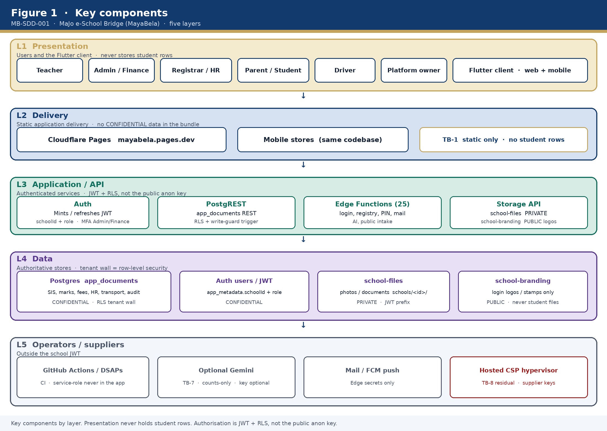
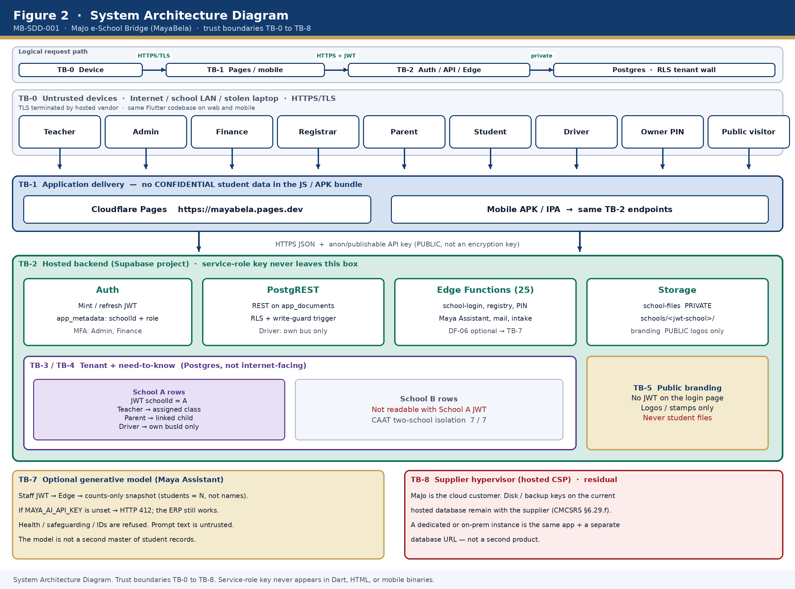
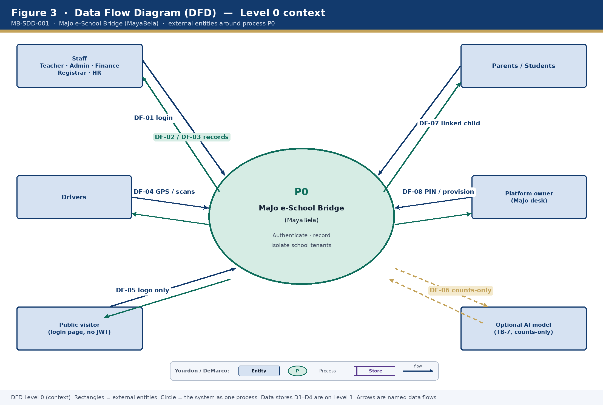
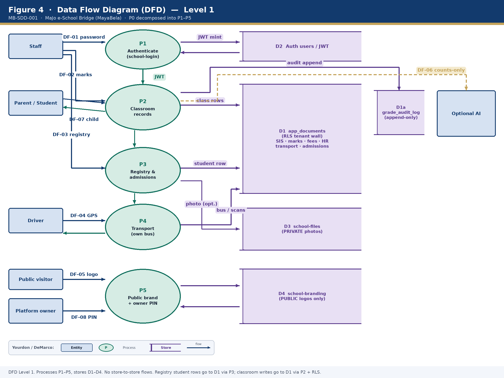

Majo Bridge Technologies and Events PLC
MaJo e-School Bridge (MayaBela) · INSA asset registration attachment
System & Architecture Design Document (SDD) — preferable format PDF
System and Architecture Design Document
Product: MaJo e-School Bridge (MayaBela) · asset MB-ESB-001 · version 1.0.6
Professionally sketched diagrams: Key components · System Architecture Diagram · Data Flow Diagram (DFD) · Data flow explanation
| Document number | MB-SDD-001 |
|---|---|
| Version | 1.2 · 13 November 2026 · East Africa Time (Africa/Nairobi) |
| Replaces | 1.1 of 13 November 2026 (PNG figures, but Level 1 had crossing arrows and A4 type was too small). 1.0 of 10 November 2026 was ASCII sketches rejected by Hibir. |
| INSA portal field | System & Architecture Design Document (SDD) — Key components, System Architecture Diagram, Data Flow Diagram (DFD), Data flow explanation. Recommendation received: add professionally sketched diagrams. |
| Companion | MB-SRS-001, MB-TDD-001, MB-UG-001, MB-SEC-001 |
| Classification | CONFIDENTIAL (CMCSRS Annex B). No live secrets in this file. |
1. Purpose
This document is the architecture baseline for INSA asset registration of MaJo e-School Bridge (MayaBela). It shows key components, how they interact, where data crosses a trust boundary, and which surfaces an attacker or a mis-scoped JWT can reach. Security requirements are in MB-SRS-001. This file is structure, diagrams, and flow.
The as-designed hosted architecture is described. Disk encryption keys on the current hosted database remain with the supplier (CMCSRS §6.29.f residual). A dedicated or on-prem instance for a school that cannot share this tenancy is the same application with a separate database URL — not a second product.
2. Key components
Key components of MaJo e-School Bridge are grouped in five layers. Presentation never stores student rows. Authorisation is the JWT plus row-level security (RLS), not the public anon key compiled into the client.

| Key component | Layer | What it does | Trust |
|---|---|---|---|
| Flutter client (web + mobile) | Presentation | One codebase for Teacher, Admin, Finance, Registrar, HR, Parent, Student, Driver, platform owner | Untrusted (TB-0) |
| Cloudflare Pages | Delivery | Static web at mayabela.pages.dev | TB-1 — no student rows in the JS bundle |
| Auth | Application | Mints JWT with schoolId + role in app_metadata. MFA for Admin and Finance | Inside TB-2 |
| PostgREST | Application | REST on public.app_documents keyed by (collection, school_id, doc_id) | RLS + write-guard |
| Edge Functions (25) | Application | Login, registry, owner PIN, Maya Assistant, mail, public intake | Service-role only after a declared gate |
| Postgres app_documents | Data | SIS, marks, fees, HR, transport, audit | CONFIDENTIAL · tenant wall = RLS |
| school-files | Data | Photos and documents under schools/<id>/ | Authenticated; prefix must match JWT school |
| school-branding | Data | Login logos and stamps | PUBLIC by design; no student files |
| Optional Gemini | Supplier | Maya Assistant, counts-only context | TB-7; key optional |
| Hosted CSP | Supplier | Hypervisor, disks, backups | TB-8 residual |
3. System Architecture Diagram
The System Architecture Diagram shows users, the static delivery tier, the hosted backend, tenant isolation, and residual supplier trust. TLS is terminated by the hosted vendor. Mobile builds of the same Flutter codebase talk to the same TB-2 endpoints and do not embed a private CA.

3.1 Trust boundaries on the architecture
| ID | Boundary | Untrusted side | Trusted side | What must hold |
|---|---|---|---|---|
| TB-0 | Internet / user device | Browser, phone, stolen laptop | — | Treat as hostile. XSS, lost phone, shared teacher PC. |
| TB-1 | Pages CDN | Anyone who can GET mayabela.pages.dev | Static assets + CSP/HSTS | No CONFIDENTIAL data in the static build except the public anon key. |
| TB-2 | Hosted API | Any client with the anon key | Auth, PostgREST, Storage, Edge | No JWT → no app_documents. Service-role only inside Edge after a gate. |
| TB-3 | School tenant | JWT of School A | Rows of School A | School A must not read School B (CAAT two-school 7/7 in source). |
| TB-4 | Need-to-know | Teacher / driver / parent JWT | Class, bus, or linked child | Driver: own bus only. Teacher: assigned class; no payroll. |
| TB-5 | Public storage | Unauthenticated GET | Logos only | Login page has no JWT. Student files must not live in branding. |
| TB-6 | Platform owner | School JWT | Owner PIN + rate-limit | Provisioning must not use a teacher JWT. PIN is PBKDF2-SHA256. |
| TB-7 | Optional AI | Prompt text | Gemini if key set | Counts-only; refuse health / safeguarding / IDs. |
| TB-8 | Supplier hypervisor | MaJo as cloud customer | Host disks / backups | Supplier holds at-rest keys (§6.29.f). Not a Flutter control. |
4. Data Flow Diagram (DFD)
The Data Flow Diagram (DFD) is drawn in Yourdon / DeMarco notation: rectangles are external entities, circles are processes, open-ended bars are data stores, arrows are named data flows (DF-01 to DF-08). Figure 3 is the context (Level 0) diagram — external entities only, no data stores. Figure 4 decomposes process P0 into P1–P5 and shows stores D1–D4. Every arrow on the figures is the same identifier used in section 5.


4.1 DFD dictionary
| ID | Type | Name | Notes |
|---|---|---|---|
| P0 | Process | MaJo e-School Bridge | Context process |
| P1 | Process | Authenticate | school-login; bcrypt; JWT mint; MFA for Admin/Finance |
| P2 | Process | Classroom records | PostgREST INSERT/UPDATE; RLS + write-guard; grade_audit_log |
| P3 | Process | Registry and admissions | Edge school-upsert-registry; desk gate; service-role after gate |
| P4 | Process | Transport | Driver JWT; own busId only |
| P5 | Process | Public brand + owner PIN | No student lists; PIN is not a school JWT |
| D1 | Data store | app_documents | CONFIDENTIAL SIS / marks / fees / HR / transport / audit |
| D2 | Data store | Auth users / JWT | schoolId + role in app_metadata |
| D3 | Data store | school-files | PRIVATE under schools/<id>/ |
| D4 | Data store | school-branding | PUBLIC logos only |
5. Data flow explanation
This Data flow explanation names every principal flow on the Data Flow Diagram (DFD). Each flow states source, destination, data, protocol, and the control that keeps children’s records inside the correct school and role.
5.1 DF-01 School login (password) — P1
A device on TB-0 sends HTTPS to Edge function school-login (public, rate-limited). The function verifies the bcrypt secret for schoolId + username + role. Auth then mints a JWT with app_metadata.schoolId and role (store D2). The device stores the JWT and uses it on later calls to PostgREST, Storage, and other Edge functions (TB-2, TB-3, TB-4). Privileged MFA (Admin, Finance): after password success, Settings requires TOTP enrolment. Teachers are not blocked from class if MFA is unset.
5.2 DF-02 Ordinary classroom write — P2
A teacher JWT is sent over HTTPS to PostgREST for INSERT/UPDATE on app_documents (store D1). RLS requires school_id = jwt_school_id(). The write-guard trigger further checks collection and assigned class. Marks also append to grade_audit_log. A modified client still hits the database wall (TB-3), not only the Flutter UI.
5.3 DF-03 Privileged registry write — P3
Staff JWT is sent over HTTPS to school-upsert-registry. The function verifies the JWT, then guardRegistryRecord (registrar desk for admissions). Only after that gate does it use the service-role to upsert D1. The service-role bypasses RLS, so the application gate replaces RLS for this path. CI fails if an Edge folder is added without a declared auth mode.
5.4 DF-04 Driver location and scans — P4
A driver JWT writes bus_live_positions and transport_scans in D1. RLS plus a driver trigger require transportId == busId. Other buses and walker students are not readable. Assigned-bus passengers and own GPS remain available.
5.5 DF-05 Public branding (no JWT) — P5
Anyone may GET school-public-brand (rate-limited) and/or the public storage object under D4. The response is school name plus logo URL. No emails, passwords, or student lists. The login page cannot present a JWT, so logos are public by design. Student files stay in D3, never D4.
5.6 DF-06 Maya Assistant (optional) — TB-7
A staff JWT calls maya-assistant-chat. The function builds a counts-only snapshot (for example students = N, not names). If MAYA_AI_API_KEY is set, the prompt crosses TB-7 to the model. Safeguarding, health, password, and ID prompts are refused. If the key is unset the function returns 412 and the ERP still works.
5.7 DF-07 Parent / student read
A parent JWT may read only linked-child rows in D1. A student JWT reads own portal rows. Neither role writes payroll, HR, or other-school records.
5.8 DF-08 Platform owner provisioning — P5 / TB-6
The MaJo desk uses an owner PIN (PBKDF2-SHA256, rate-limited), not a school JWT, to list/create/update schools and upload logos. Provisioning must not be possible with a teacher token.
5.9 What never flows
- The service-role key never flows to Dart, HTML, or mobile binaries.
- School A JWT never flows to School B rows (TB-3).
- Named student, health, counselling, safeguarding, draft marks, and unpublished report cards are not stored as a cloud master copy outside the School Node / hosted Postgres of that tenant.
- Maya Assistant does not receive a dump of children’s identities.
6. Logical structure (narrative of the architecture)
6.1 Presentation
One Flutter application (web on Cloudflare Pages; mobile stores). The anon / publishable API key is compiled into the client (PUBLIC). It is not an encryption key. Authorisation is the JWT plus RLS. The service-role key must never appear in Dart, HTML, or mobile binaries.
6.2 Application / API
- PostgREST on
public.app_documentskeyed by(collection, school_id, doc_id). RLS and a write-guard trigger enforce school and role. Driver SELECT is further restricted to assigned-bus students. - Edge Functions (25) when the client cannot use RLS alone (password verify, PIN, service-role writes, public intake). Each function has a declared auth mode in
edge_auth_inventory.ts; CI fails if a folder is added without one.
6.3 Data
| Store | Content | Annex B | Trust |
|---|---|---|---|
| Postgres app_documents | SIS, marks, fees, HR, transport, audit | CONFIDENTIAL | Inside TB-2; RLS is the tenant wall |
| Auth users / JWT | schoolId + role in app_metadata | CONFIDENTIAL | DB helpers ignore user-editable metadata |
| school-files | Photos, documents under schools/<id>/ | CONFIDENTIAL | Authenticated; prefix must match JWT school |
| school-branding | Login logos / stamps | PUBLIC | Anon SELECT; no student files |
| Edge secrets | Service-role, mail, optional AI key, push secret | CONFIDENTIAL | TB-2 only; DSAPs |
7. Attack surfaces
Surfaces are listed so INSA can see what we expose, not as a pentest letter (that letter is still scheduled after staging apply).
| ID | Surface | Who can reach it | Primary controls | Residual |
|---|---|---|---|---|
| AS-01 | Static web (Pages) | Internet | HTTPS, HSTS, CSP, nosniff, DENY framing | XSS in third-party map/font origins allowed by CSP |
| AS-02 | Anon API key in the client | Anyone who downloads the app | RLS; anon has no app_documents policy | Inherent to hosted anon model |
| AS-03 | school-login / password reset / register-parent / submit-application | Internet, no JWT | Rate-limit; hashed secrets; no user-existence leak on reset | Credential stuffing if school passwords are weak |
| AS-04 | PostgREST with a stolen staff JWT | Anyone with that token until expiry | TB-3/TB-4 RLS; MFA on Admin/Finance | Teacher JWT theft on a shared PC — MFA not forced on teachers |
| AS-05 | Storage public branding | Internet | Logos only by policy | Mis-upload of a student file into branding would be a data spill (IRP) |
| AS-06 | Storage school-files | Authenticated JWT | Prefix schools/<jwt school>/ | Object ACL bugs would be High |
| AS-07 | Edge with service-role | After JWT/PIN/public gate | Inventory + registry policy + PIN PBKDF2 | A missed gate is equivalent to RLS bypass — CI tracks inventory |
| AS-08 | Platform owner PIN | Internet to those functions | Rate-limit; PBKDF2; no school JWT | PIN reuse / shoulder-surfing at the vendor desk |
| AS-09 | send-push | Caller with x-push-secret | Secret; re-reads notification row | Secret in Edge config |
| AS-10 | Maya Assistant | Staff JWT | Counts-only; refuse sensitive; optional key | User may still type a name into the prompt — instruction refuses to echo PII |
| AS-11 | GitHub Actions / DSAPs | MaJo operators | Secrets in CI; production never the RLS test target | Human error; DSAP clearance files still national-scheme residual |
| AS-12 | Supplier platform | Hosted CSP | DPA; no destructive tests on live project | Foreign host; keys not MaJo-held |
8. Edge Function auth modes
| Mode | Functions | Trust assumption |
|---|---|---|
| password-login | school-login | Secret verified; then JWT |
| user-jwt | refresh-claims, change-password, upsert-account, upsert-registry, delete-account, verify-student, maya-assistant-chat | Caller JWT; school isolation; extra desk checks where noted |
| platform-owner-pin | owner-pin, list/create/update/delete-school, upload-logo, upload-mark, mail-config | PIN, not a school JWT |
| public-rate-limited | password-reset pair, student-reset request, register-parent, invite-parent, submit-application, public-brand, client-crash-report | No JWT; rate-limit; no CONFIDENTIAL dump in the response |
| push-secret | send-push | Shared Edge secret + stored notification row |
9. Security design decisions
- RLS in the database, not only the UI. A modified client still hits TB-3.
- Anon key public; service-role private. Losing the anon key is not a breach if RLS holds.
- Login logos public. The login page cannot present a JWT; student files stay in a private bucket.
- Teachers not forced onto MFA. Privileged desks (Admin, Finance) are. Classroom availability is a stated requirement (MB-SRS-001).
- One operator, many schools. Isolation is JWT + RLS, not per-tenant disk keys handed to schools.
10. Related documents
MB-SRS-001 (requirements). MB-TDD-001. MB-UG-001. MB-SEC-001. CSMS-AST-001 (assets). CSMS-KEY-001 (crypto). CSMS-SUP-001 (cloud register). CSMS-DPIA-001 (AI). CSMS-IRP-001 (incidents). CAAT: supabase/tests/local_pg.